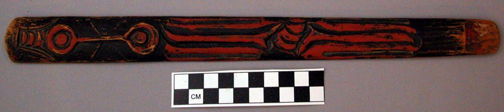
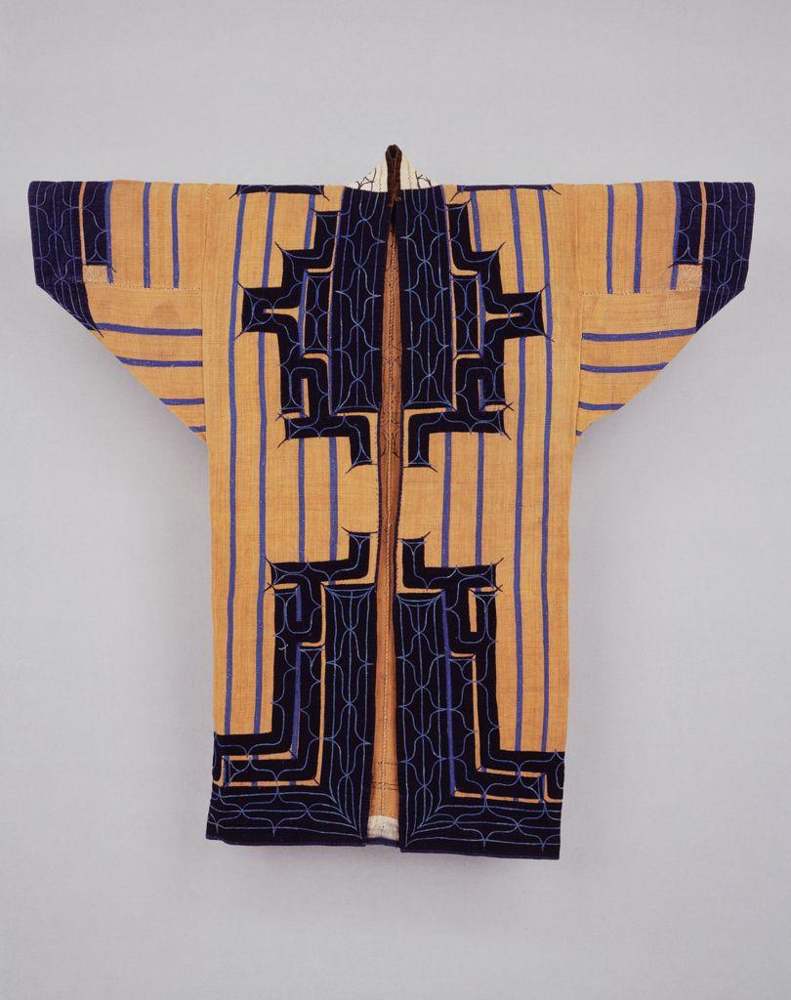
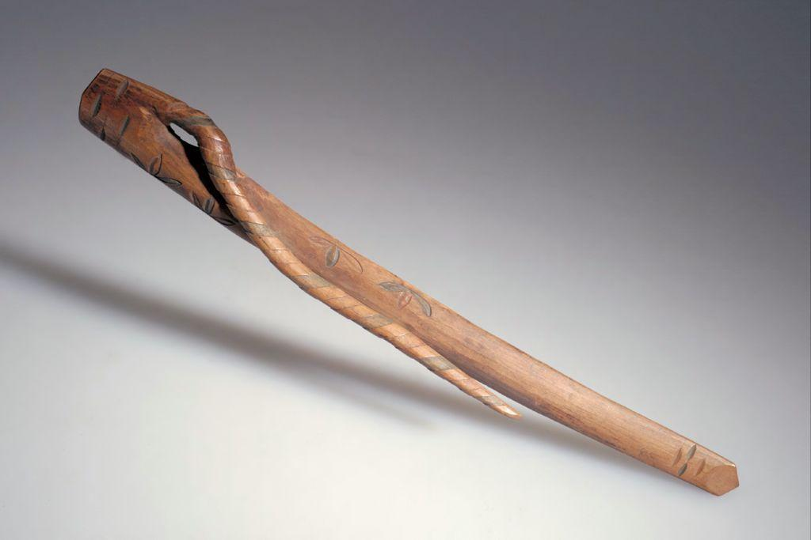
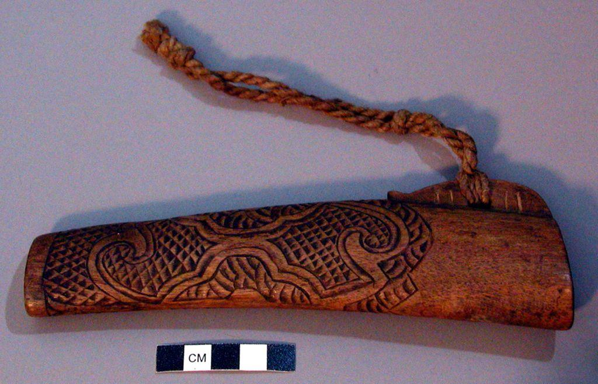
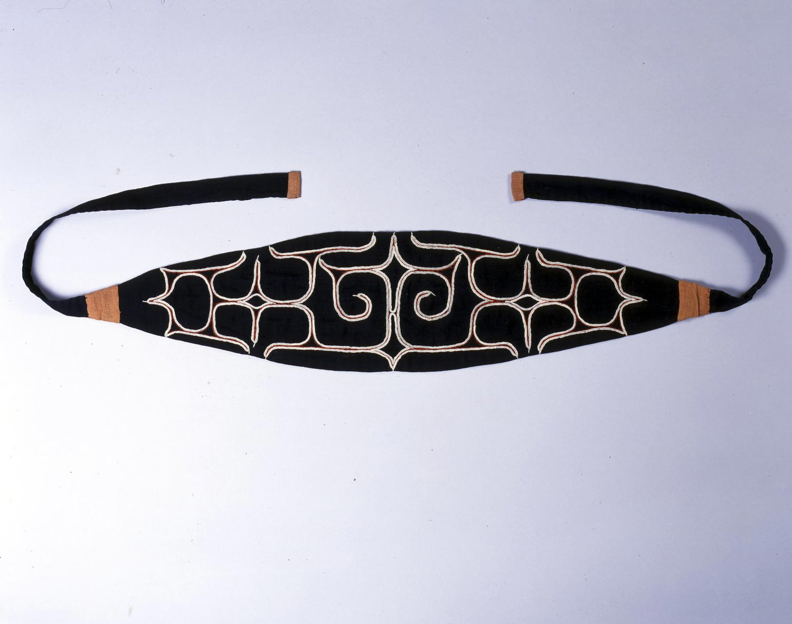
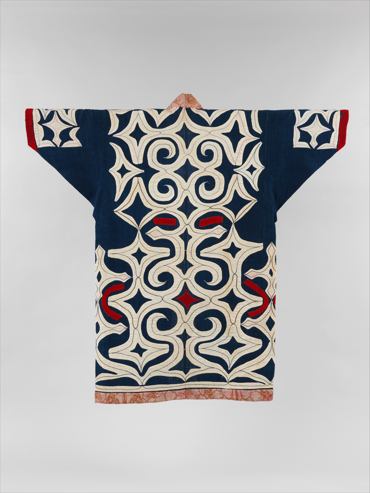

The Ainu — from origin to the forest

Inaw prayer stick · Peabody Museum
Attush bark-cloth robe · Seattle Art Museum
Ikupasuy prayer wand · AMNH
Makiri knife sheath · Peabody Museum
Matanpushi headband · Brooklyn Museum
Ainu robe · The Metropolitan Museum of Art